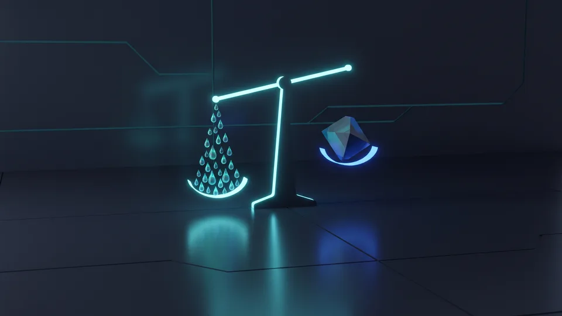

Google Ads Bütçesi Nasıl Planlanır?
Bütçe planını, aylık üst sınırı günlük tavana bölerek ve test dönemini ayrı bir kalem sayarak kurarız. Google Ads reklam yönetimini harcama değil, ölçülebilir bir satın alma süreci olarak ele alırız. Dönüşüm başına ödeyebileceğimiz tavanı önce belirler, kelime listesini bu tavana göre daraltırız.
Tıklama maliyeti, bir kullanıcının reklamınıza her tıklayışında ödediğiniz değişken tutardır. Bu tutar sabit kalmaz; gün içinde bile oynar. Google Ads reklam yönetiminde bütçeyi tek rakam olarak değil, tavan ile taban arasında bir aralık olarak kurgularız.
Dijital kanala geçen işletme sayısı artıyor. Ticaret Bakanlığı ETBİS raporuna göre e-ticaret yapan işletme sayısı 634.611'e ulaştı. Bu işletmelerin bir bölümü aynı aramalarda teklif veriyor; rekabet arttıkça bütçe disiplini önem kazanıyor.
Yeni bir hesapta Google Ads yönetimi için şu sırayı izleriz:
- Bir dönüşüm için ödeyebileceğiniz üst sınırı yazarız.
- Bu sınırı tahmini tıklama maliyetine böleriz.
- Çıkan tık sayısını aylık satış hedefiyle çarparız.
- İlk 30 günü öğrenme dönemi sayar, sonucu ayrı raporlarız.
Günlük tavan ile aylık taahhüt arasındaki fark
Günlük tavan, sistemin bir gün için hedeflediği ortalama tutardır; panel yoğun günlerde bu tutarın üzerine çıkar, ay sonunda ortalamayı tutturur. Aylık taahhüt ise sizin finansal planınızdır. Nakit akışını bu dalgalanmaya göre kurgulamak sürprizi önler.Test bütçesi için makul alt eşik
Çok küçük bir test bütçesi veri üretmez. Algoritma öğrenmek için yeterli tık ve dönüşüm ister. Kampanyayı dört haftadan kısa sürede kapatan işletme, ödediği öğrenme bedelini çöpe atar.Tıklama Maliyetini Ne Belirler?
Üç etken tıklama maliyetini belirler: rakiplerin teklifi, hesabınızın kalite puanı ve aranan terimin ticari niyeti. Aynı sektördeki iki işletme, aynı kelimeye çok farklı bedel öder. Kalite puanı yükseldikçe aynı sırayı daha düşük teklifle koruruz; bu da gideri aşağı çeker. Rakam tutmazsa hedef kelimeyi değiştiririz.
Kalite puanı, reklamınızın ve açılış sayfanızın arama niyetine ne kadar uyduğunu ölçer. Puan düştüğünde aynı konum için daha fazla ödersiniz. Metin yazımının kendi tekniği ayrı bir konudur; burada yalnızca maliyete etkisine bakıyoruz.
Ticari niyeti yüksek kelimelerde rekabet serttir. Fiyat, sipariş veya randevu içeren aramalar pahalıdır, çünkü herkes aynı kişiye ulaşmak ister. Google Ads reklam yönetimi içinde kârlılığı koruyan yol, bu pahalı kelimeleri kapatmak değil, dönüşüm oranını yükseltmektir.
Sektör rekabeti maliyeti nasıl yükseltir?
Sigorta, hukuk ve özel sağlık gibi alanlarda müşteri değeri yüksektir; yüksek değer yüksek teklifi getirir. Mobilya veya hediyelik eşyada aynı bütçe çok daha fazla tık satın alır. Sektör ortalamasını bilmeden bütçe belirlemek, hedefi karanlıkta aramaya benzer.Eşleme türü bütçeyi sessizce eritir
Geniş eşleme, alakasız aramalara da reklam gösterir. Tıklar birikir, dönüşüm gelmez. Tam ve öbek eşlemeyle başlar, negatif kelime listesini her hafta genişletiriz.Organik Büyümenin Maliyeti Gerçekten Sıfır mı?
Hayır, organik büyümenin de bir maliyeti vardır; fatura yerine emek ve zaman olarak çıkar. İçerik üretimi, teknik altyapı ve bekleme süresi birer gider kalemidir. Arama sonuçlarında yükselmek aylar alır. Google Ads reklam yönetimi bu bekleme süresini satın alır, organik çalışma ise onu birikime çevirir.
Organik büyüme, arama motorlarından ücretsiz tık kazanmak için içeriğe ve teknik iyileştirmeye yapılan yatırımdır. Karşılığı gecikmeli gelir. İçerik stratejisi kapsamında ürettiğimiz her sayfa, yayında kaldığı sürece çalışmayı sürdürür.
Dijital alışkanlıklar bu kalemi besliyor. Hane halkının internet kullanımına dair resmi ölçümleri TÜİK yayımlıyor; bu kaynağı kendi arama verinizle birlikte okuruz. Arama hacmi büyüdüğü ölçüde organik görünürlük, uzun vadede birim maliyeti aşağı çeken kalemde durur.
Zaman, bilançoda görünmeyen gider kalemi
Bir içerik ekibinin üç aylık emeği bütçede satır olarak görünmez. Yine de maaş, prova ve revizyon zamanı gerçek paradır. Organik çalışmanın maliyetini hesaplarken bu emeği saat başına çevirir, Google Ads reklam yönetimi faturasıyla aynı tabloya koyarız.İçerik üretiminin saatlik maliyeti nasıl çıkarılır?
Bir sayfanın araştırma, yazım, görsel ve yayına alma sürelerini ayrı ayrı yazarız. Her adımı üstlenen kişinin saat maliyetiyle çarpar, çıkan tutarları toplarız. Revizyon payını eklediğimizde sayfa başına gerçek üretim bedeli ortaya çıkar. Aylık organik gider, bu bedelin sayfa sayısıyla katıdır.Google Ads Reklam Yönetimi ile Organik Kanalın Gider Yapısı
Reklam değişken maliyetlidir; organik kanal ağırlıklı olarak sabit maliyetle çalışır. Bütçeyi kestiğinizde reklam trafiği aynı gün düşer; yayındaki içerik ise ziyaretçi getirmeyi sürdürür. Bu fark, iki kanalın risk profilini ayırır. Nakit sıkıştığında hangi kalemi kısacağınızı önceden bilmek işinizi rahatlatır. Karar, sektörünüzün nakit döngüsüne bağlıdır.
Edinme maliyeti, bir müşteriyi kazanmak için harcadığınız toplam tutarın kazanılan müşteri sayısına bölümüdür. Reklamda bu hesap kolaydır; harcama panelde durur. Organik kanalda içerik, tasarım ve teknik iş saatlerini toplamanız gerekir.
İki kanalı aynı ölçüye getirmeden karşılaştırmak yanıltır. Performans pazarlaması çalışmasında kurduğumuz ölçüm düzeni, her kanalın kendi edinme maliyetini ayrı gösterir. Aynı dönem ve aynı dönüşüm tanımı olmadan çıkan sonuç güvenilir olmaz.
Değişken maliyet ile sabit maliyet ayrımı
Değişken maliyet, hacimle birlikte büyüyen kalemdir; her yeni tık faturaya eklenir. Sabit maliyet ise hacimden bağımsızdır. Bir rehberi bin kişi de okusa on bin kişi de okusa üretim bedeli aynı kalır.Ajans yönetim ücreti hangi kalemde durur?
Yönetim ücreti hacimle birlikte artmadığı için sabit kalemde durur. Reklam harcamanız yükselse de bu satır aynı kalır. Bu yüzden ücreti tık başına dağıtmaz, aylık toplam gidere ekleriz. Küçük bütçelerde bu kalem oransal olarak ağır basar.“2024 yılında 600 bin 800 olan e-ticaret yapan işletme sayısı, 2025'te 634 bin 611'e yükseldi.”
— Ticaret Bakanlığı, Türkiye'de E-Ticaretin Görünümü 2025
Hangi Bütçe Aralığında Hangi Kanal Öne Geçer?
Küçük ve acil bütçelerde reklam, uzun soluklu planlarda organik kanal öne geçer. Nakit döngüsü kısa olan işletme hızlı geri dönüş ister; reklam bunu sağlar. Yılı planlayan marka ise birim maliyeti düşürmek için içeriğe yatırır. Çoğu KOBİ için doğru cevap, ikisinin dengeli bileşimidir. Denge oranını sektöre göre kurarız.
Karar verirken önce nakit dayanağını ölçeriz; kampanya kaç hafta ayakta kalabilir? Ardından ürün marjının tık maliyetini kaldırıp kaldırmadığına bakarız. Son olarak arama hacminin düzenli olup olmadığını kontrol ederiz. Üçü de olumluysa reklam kanalını açarız; biri bile zayıfsa önce içerik ve teknik altyapıyı güçlendiririz.
Hangi kanala ne kadar ayıracağınızı rakamla görmek istiyorsanız, mevcut harcamanızı ve hedef dönüşüm sayınızı bize iletin. Teklif formundan birkaç dakikada başlar, Google Ads reklam yönetimi ile organik planın maliyetini yan yana çıkarırız.
Bütçeyi bölüştürürken ağırlığı ne belirler?
Ağırlığı belirleyen ilk şey satışın aciliyetidir. Aciliyet yüksekse payı reklama veririz. Ürün marjı darsa organik tarafı büyütür, reklamı yalnızca en kârlı kelimelerde tutarız. Rekabet sertleştikçe aynı sonuç daha yüksek bütçe ister; o zaman kelime listesini daraltırız.
Google Ads ve Organik Kanal Maliyet Karşılaştırma Tablosu
| Maliyet kalemi | Google Ads | Organik kanal | Karar notu |
|---|---|---|---|
| Başlangıç gideri | Günlük bütçe ilk günden işler | Hazırlık ve üretim emeği | Nakit darsa organik tarafla başla |
| Maliyet tipi | Değişken, tık başına artar | Ağırlıklı sabit | Hacim büyüyecekse sabit kalem avantajlı |
| İlk sonuç süresi | Aynı hafta ölçülür | Aylara yayılır | Aciliyet reklamı öne çıkarır |
| Durdurma etkisi | Trafik aynı gün düşer | Sayfalar getirmeyi sürdürür | Sezonluk işte reklam esnektir |
| Birim maliyet eğilimi | Rekabetle yükselir | Zamanla iner | Uzun vadede organik lehine |
| Ölçüm kolaylığı | Panelde net harcama | Emek saati toplanır | Ortak ölçü olmadan kıyas yanıltır |
Kapsamınıza uygun yol haritasını birlikte çıkaralım; adımları ve zamanlamayı netleştirelim.
Kapsam çıkaralım Hizmet sayfasını görMaliyet tartışması, kanalların birbirini elemesiyle değil, rollerin netleşmesiyle biter. Reklam bugünün talebini yakalar, organik çalışma yarının giderini düşürür. İkisini tek tabloda ölçtüğünüzde bütçe kararı tahmin olmaktan çıkar. Rakamlarınızı paylaşın, hangi kanalın sizin için daha ucuza geldiğini birlikte hesaplayalım.